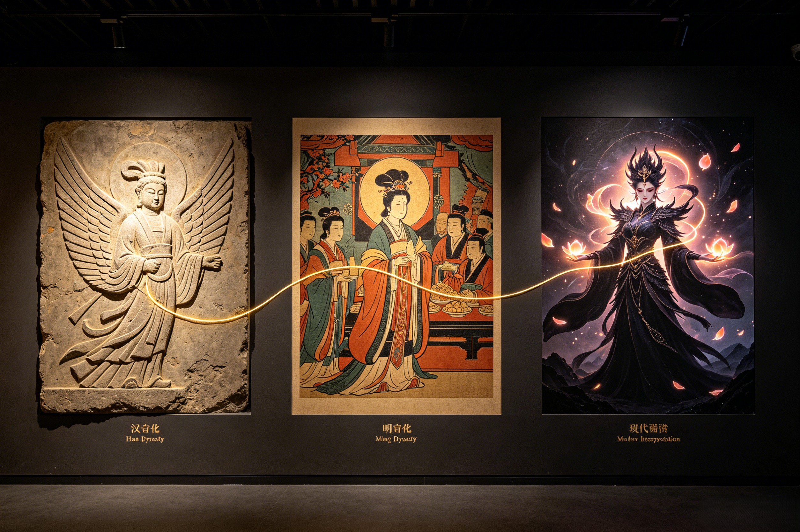

The Immortal Queen in Art and Culture
From Han dynasty tomb murals to the world's biggest video game — how the Queen Mother continues to captivate the imagination.
No deity in Chinese mythology has inspired as consistent and varied a cultural tradition as the Queen Mother of the West. Her presence in Chinese art and literature spans over two millennia, adapting to the aesthetic and philosophical concerns of each dynasty while retaining her core identity as the divine matriarch of paradise. The Tang dynasty (618–907 CE), often called China's golden age of poetry, produced the most famous literary tributes to the goddess. The great poet Li Bai (李白, 701–762 CE) — known as the "Immortal Poet" for his wine-soaked, free-spirited verse — wrote repeatedly of the Queen Mother. In his poem "Farewell to a Friend on His Journey to the West", Li Bai invokes the goddess as the ultimate symbol of transcendence: "I have heard of the Queen Mother of the West / She sits on her jade throne in the clouds / Her blue birds carry messages from heaven / And the peaches of her garden ripen once in three thousand years." Li Bai, who styled himself a Taoist immortal in his later years, clearly identified the Queen Mother's paradise as the goal of the spiritual seeker. His verses established a poetic vocabulary for describing the goddess — the jade throne, the blue birds, the nine-thousand-year peaches — that later poets would draw upon for centuries.
During the Song dynasty (960–1279 CE), the Queen Mother became a favored subject of court painters and Buddhist-Taoist syncretic artists. The most celebrated surviving work from this period is the anonymous "Queen Mother of the West" handscroll held in the National Palace Museum in Taipei, which depicts the goddess arriving at the court of Emperor Wu of Han (r. 141–87 BCE) on a cloud chariot drawn by cranes, attended by her blue birds and a retinue of female immortals. The painting, executed in the gongbi (fine brush) technique with mineral pigments of azurite blue, malachite green, and vermillion, represents the apogee of Song imperial painting. The goddess is portrayed as a mature, commanding figure — not the youthful beauty of later depictions but a matriarch of undeniable authority, her face serene yet unreadable, her eyes holding the wisdom of ages. The handscroll format allowed viewers to "unfold" the narrative gradually, following the goddess's descent from Kunlun as if reading a painted scripture. Song dynasty scholars wrote extensive colophons on the painting, debating its historical accuracy and its relationship to the Mu Tianzi Zhuan text — demonstrating that even a millennium ago, the Queen Mother was a subject of serious scholarly inquiry.
The Ming dynasty (1368–1644 CE) brought the Queen Mother to a mass audience through the explosive growth of vernacular fiction. In Journey to the West (西游记, 1592), the Queen Mother's Peach Banquet is the inciting incident of the entire cosmic drama — when Sun Wukong is excluded from the feast, his anger sparks the rebellion that shocks heaven. Wu Cheng'en portrays the Queen Mother as dignified, precise, and deeply traditional — a goddess who upholds the celestial hierarchy through ritual and protocol. Her role in the novel is small in terms of page count but enormous in narrative weight: without her peach garden and her banquet, there would be no Havoc in Heaven, no Buddha's intervention, and ultimately no Journey to the West itself. In Fengshen Yanyi (封神演义, Investiture of the Gods), the other great Ming mythological novel, the Queen Mother appears as the Goddess of the Western Paradise who Nüwa consults during the crisis of the Shang dynasty's collapse. Nüwa, herself a supreme goddess, defers to the Queen Mother's wisdom — a subtle textual acknowledgment of Xiwangmu's seniority in the divine hierarchy.
During the Qing dynasty (1644–1912 CE), the Queen Mother entered the world of Peking Opera, where her story was adapted into several celebrated plays. The most famous is "The Peach Banquet" (蟠桃会, Pantao Hui), a lavish spectacle that remains in the Peking Opera repertoire to this day. The opera features the Queen Mother as a laodan (old female) role, performed by actresses wearing elaborate golden headdresses and embroidered peach-blossom robes. The performance includes virtuosic dance sequences where the actress mimes picking peaches, offering them to the gods, and reacting to Sun Wukong's theft with a blend of outrage and regal composure. The opera was a favorite at the Qing imperial court — the Empress Dowager Cixi, herself a powerful female ruler who drew deliberate parallels to the Queen Mother, ordered performances every year on the third day of the third lunar month. Cixi identified so strongly with the goddess that she commissioned a massive oil portrait of herself as the Queen Mother of the West, flanked by attendants holding peaches and blue bird fans — a fusion of imperial and divine authority that embodied the Qing court's self-image.
One of the most emotionally powerful stories connected to the Queen Mother of the West is the legend of the White Haired Maiden (白发仙姑, Baifa Xiangu) — a tale of love, loss, and immortality that has captured the Chinese imagination for centuries. According to the most widely circulated version, the White Haired Maiden was a young woman named Yu Xuanji (or, in variant tellings, a daughter of the Tang imperial house) who fled to the Kunlun Mountains after her family was killed in a political purge. Wandering alone through the snow-covered peaks, she was on the verge of death when the Queen Mother appeared to her in a vision, offering her a deal: serve the goddess faithfully in the Peach Garden for a thousand years, and she would be granted immortality. Yu Xuanji accepted and was transformed into the White Haired Maiden — an immortal with hair as white as Kunlun's snow but a face of eternal youth, who tends a corner of the Peach Garden where the rare white peach trees grow.
The White Haired Maiden legend has been adapted into multiple art forms across Chinese history. In Qing dynasty folklore collections, she appears as a compassionate figure who occasionally descends from Kunlun to help lost travelers or heal the sick, her white hair streaming behind her like a banner of mercy. In 20th-century Chinese opera, the story was expanded into a full-length tragedy — the White Haired Maiden falls in love with a mortal scholar who has wandered into the Kunlun mountains, and she must choose between her immortality and her love, a choice that echoes the Chinese myth of the Cowherd and the Weaver Girl. The opera's climax, in which the Queen Mother herself appears to judge the lovers, is a show-stopping scene of divine authority and tragic compassion. The story's power lies in its central paradox: the Queen Mother grants immortality, but immortality itself becomes a prison when weighed against human love.
In 1980s Chinese television, the White Haired Maiden appeared as a character in several mythological drama series, portrayed as a tragic figure who serves as a bridge between the mortal and immortal realms. An especially poignant episode of the 1986 Journey to the West TV series features a scene near the Peach Garden where the White Haired Maiden warns Sun Wukong about the consequences of stealing the peaches — a moment of foreboding that the young Monkey King, predictably, ignores. The White Haired Maiden's legend, while less internationally known than the Monkey King's adventures, remains a beloved piece of Chinese folklore — a story of devotion rewarded, sacrifice honored, and the bittersweet nature of the immortality that only the Queen Mother can bestow.
The Queen Mother of the West has undergone a remarkable renaissance in 21st-century media, appearing in video games, anime, film, and literature across the world. Her most prominent recent appearance is in Black Myth: Wukong (黑神话:悟空, 2024), the record-shattering action-RPG developed by Game Science that brought Chinese mythology to a global audience of over 20 million players. While the game focuses primarily on the Monkey King's perspective, the Queen Mother's presence looms over the narrative — her Peach Garden is one of the game's most visually stunning environments, rendered in Unreal Engine 5 with photorealistic peach blossoms, glowing jade architecture, and a sky painted in the colors of eternal sunset. The game's interpretation of the Queen Mother is deliberately ambiguous and layered — she is depicted as a being of immense power and ancient wisdom, but also as the embodiment of the celestial hierarchy that Sun Wukong rebels against. Players who explore the hidden lore texts scattered through the game can piece together a version of the Queen Mother's story that draws from the earliest Shan Hai Jing descriptions — a reminder that before she was the serene empress, she was a goddess of wild, untamed power.
In Japanese anime and manga, the Queen Mother of the West has been a recurring figure in works based on Chinese mythology. The classic manga Fengshen Yanyi by Ryu Fujisaki (1996–2000) — itself a retelling of the Ming dynasty novel — portrays the Queen Mother as a mysterious and formidable goddess who watches over the conflict from her western paradise, intervening at critical moments with gifts of peaches or cryptic prophecies. In the Monkey King anime series (also known as Saiyuki), the Queen Mother appears as the leader of the celestial court, a cool and calculating figure who contrasts with the warm, maternal Guanyin. In Chinese manhua and donghua (comics and animation), the Queen Mother has been reimagined in multiple styles — from the classical court-painting aesthetic of Yao Chinese Folktales to the sleek, sci-fi reimagining in The Legend of Hei, where she appears as a cosmic guardian who oversees the balance between the mortal and spirit worlds.
The Queen Mother has also appeared in Western media as a figure of Chinese mythology. The American animated series American Dragon: Jake Long featured the Queen Mother as a wise and powerful elder whom the protagonist consults for guidance. In video games beyond Black Myth: Wukong, the Queen Mother appears as a character in Smite, the multiplayer online battle arena game, where she is a playable mage-class goddess with abilities based on the Peaches of Immortality and her blue bird messengers. The Japanese role-playing game series Shin Megami Tensei has included the Queen Mother as a demon (in the series' neutral classification of mythological beings) since its earliest installments, typically depicting her as a high-ranking deity with powerful healing and support abilities. The Chinese mobile game Onmyoji, set in a mythological version of ancient Japan heavily influenced by Chinese mythology, introduced the Queen Mother as a limited SSR-rank character in 2021, with an elaborate visual design inspired by Song dynasty paintings — complete with a feathered sheng crown, flowing jade robes, and two blue birds circling around her in combat animations.
In film and television, the Queen Mother has been a fixture of Chinese mythological cinema since the 1960s. The 1964 animated classic Havoc in Heaven (大闹天宫) — a masterpiece of Shanghai Animation Film Studio — features the Queen Mother as a regal, stern presence whose Peach Banquet sequence is one of the film's most visually breathtaking set pieces. The 1986 Journey to the West TV series portrayed the Queen Mother as a dignified, somewhat distant figure — the embodiment of celestial authority, whose displeasure at Sun Wukong's theft carries the weight of cosmic law. In the 2014 blockbuster The Monkey King starring Donnie Yen, the Queen Mother was portrayed by Hong Kong actress Kelly Chen in a role that emphasized the goddess's humanity and warmth — a deliberate departure from the stern matriarch of earlier adaptations. The 2023 film Creation of the Gods I: Kingdom of Storms, the first installment of a planned Fengshen cinematic universe, includes the Queen Mother among its vast ensemble of mythological figures, hinting at a larger role in the sequels. Each reimagining adds another layer to the Queen Mother's cultural identity — she is ancient and modern, stern and compassionate, Chinese and universal.
Perhaps the most significant dimension of the Queen Mother of the West's modern legacy is her role as a symbol of female authority and divine feminine power in Chinese culture and beyond. In a Chinese religious tradition that became increasingly patriarchal under Confucian influence — where the Jade Emperor reigns supreme and the most visible female deity, Guanyin, is defined by mercy rather than authority — the Queen Mother stands as a rare exception: a female deity who wields supreme, unquestioned power. She is not a consort who rules through her husband; she is a co-sovereign who rules in her own right, whose domain (immortality, ritual, the inner court) is complementary to the Jade Emperor's rather than subordinate. In some versions of the mythology, she predates the Jade Emperor entirely — a primordial goddess who was worshipped for over a thousand years before the Jade Emperor rose to prominence during the Song dynasty.
Modern feminist scholars of Chinese religion have identified the Queen Mother as evidence of an ancient matriarchal tradition in Chinese spirituality — a time when female deities held supreme authority, before the patriarchal reforms of later dynasties reoriented the pantheon around a male ruler. The scholar Suzanne Cahill, in her seminal study Transcendence and Divine Passion: The Queen Mother of the West in Medieval China, argues that the Queen Mother served as a model of female spiritual authority for medieval Taoist women, who could identify with a goddess who achieved supreme power through her own cultivation and wisdom rather than through marriage or motherhood. Cahill notes that the Queen Mother's association with longevity, healing, and transcendence offered women an alternative to the Confucian ideal of female virtue, which was defined entirely in terms of domestic service and subordination. For Taoist women seeking spiritual fulfillment outside the confines of traditional family life, the Queen Mother was not merely a goddess to be worshipped — she was a divine role model who proved that female power could be cosmic rather than domestic, autonomous rather than relational.
Comparisons with Western goddess archetypes have further enriched the Queen Mother's symbolic resonance. She has been compared to Hera, the queen of the Greek gods — but where Hera is often portrayed as jealous and vindictive, the Queen Mother is dignified and just. She has been compared to Isis, the Egyptian goddess of magic and motherhood — but where Isis achieves power through her relationship with Osiris, the Queen Mother's power is inherent and self-generated. She has been compared to the Japanese Amaterasu, the sun goddess who rules the Shinto pantheon — but where Amaterasu withdraws from the world, the Queen Mother actively engages with mortals, granting blessings and supervising the celestial order. These comparisons reveal what makes the Queen Mother unique in world mythology: she is a goddess of supreme authority who is also a nurturer, a granter of life who also commands death, a figure of terrifying ancient power who evolved into a symbol of compassionate care. She contains contradictions that other mythological traditions usually separate into different deities — the warrior goddess and the mother goddess, the queen of heaven and the healer of the sick, the keeper of secrets and the bestower of blessings.
In contemporary Chinese feminist discourse, the Queen Mother has been reclaimed as a symbol of female empowerment and cultural identity. Writers and artists have used her image to challenge traditional gender roles and to imagine a Chinese spirituality that honors feminine power on its own terms. The poet and essayist Zhang Xiaohong has written about the Queen Mother as "the ancestor we forgot — the mother who ruled before we learned to call the father 'heaven.'" In visual art, contemporary Chinese painter Cui Jie has created a series of works reimagining the Queen Mother in urban, futuristic settings — placing her jade palace in the skyline of modern Shanghai, her peach garden in a neon-lit park, her blue birds transformed into drones carrying messages across the digital heavens. These works suggest that the Queen Mother is not confined to the past — she is a living symbol whose meaning continues to evolve with each generation that tells her story.
The Queen Mother's legacy is ultimately the story of how a goddess survives. She survived the transition from Shang dynasty shamanism to Han dynasty state cult. She survived the rise of Taoist orthodoxy and the importation of Buddhism. She survived the literati's dismissal of folk religion and the iconoclasm of the Cultural Revolution. She survived because she was never frozen in a single form — she adapted, absorbed, and transformed, as all enduring symbols must. Today, she appears in a video game played by millions on the other side of the world, her story retold in languages she never knew existed, her image recognized by people who may never have heard the name Kunlun. The Queen Mother of the West began as a tiger-toothed demon in a mountain cave. She became the Empress of Immortality. And her story is still being written. As Nezha, Zhu Bajie, Tang Sanzang, the Bull Demon King, and all the other figures of Chinese mythology find new audiences in the global age, the Queen Mother of the West — the matriarch of them all — remains at the center, the oldest goddess still worshipped, the most powerful woman in heaven, forever seated on her jade throne above the clouds of Kunlun.
In Wu Cheng'en's Journey to the West, the Queen Mother of the West is the host of the Peach Banquet, the most important ritual event in the celestial calendar. She is portrayed as dignified, meticulous, and deeply traditional — a goddess who upholds the hierarchy of heaven through ritual protocol. When Sun Wukong is excluded from the banquet (a deliberate snub orchestrated by the Jade Emperor), the Monkey King's rampage through the Peach Garden triggers the Havoc in Heaven. Though she appears in only a few scenes, her role is narratively crucial: without her Peach Banquet, there would be no rebellion, no Buddha's intervention, and ultimately no Journey to the West itself.
While the Queen Mother of the West does not appear as a directly interactive character in Black Myth: Wukong (2024), her presence permeates the game's world. The Peach Garden is one of the game's most visually stunning environments, rendered in Unreal Engine 5 with breathtaking detail. Lore texts scattered throughout the game reference the Queen Mother's history, her conflict with Sun Wukong, and her role in the celestial hierarchy. The game's interpretation draws from the earliest Shan Hai Jing descriptions, presenting her as a being of both immense power and ancient, wild origins — a deliberate contrast to the serene empress of popular tradition.
The Queen Mother of the West represents female authority, divine feminine power, and the possibility of transcendence. In Chinese culture, she is a rare example of a female deity who wields supreme, unquestioned power — not through a male consort but as a co-sovereign in her own right. Modern feminist scholars see her as evidence of an ancient matriarchal tradition in Chinese spirituality. She represents the integration of opposites: the creator and the destroyer, the nurturer and the judge, the ancient wild goddess and the civilized empress. As a global symbol, she offers a model of feminine power that is autonomous, wise, and enduring.
Dive Deeper